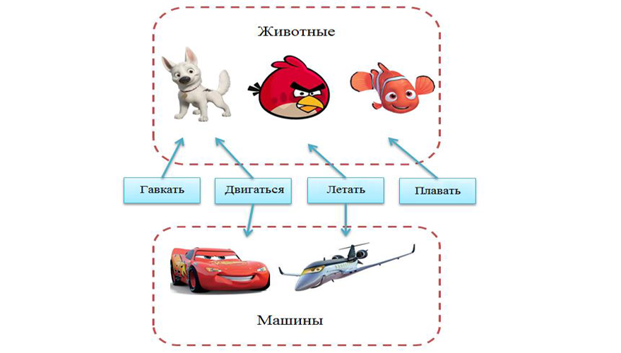

12. Домашние и бонусные задания
- Здорово, боец!
- Здравия желаю, капитан Бобров!
- У меня для тебя шикарная новость. Вот тебе задания для закрепления полученных навыков. Выполняй их каждый день, и твои навыки будут расти с неимоверной скоростью. Они специально разработаны для выполнения их в Intellij IDEA.
| Дополнительные задания для выполнения в Intellij Idea |
|---|
| 1. Метод getName в классе Cat Переопредели метод getName в классе Cat так, чтобы программа выдавала на экран надпись «Я - кот». |
| 2. Метод setName в классе Cat Переопредели метод setName в классе Cat так, чтобы программа выдавала на экран надпись «Я - кот». |
| 3. Добавь один метод в класс Cat Добавь один метод в класс Cat так, чтобы программа ничего не выводила на экран. |
| 4. Что это? «Кот», «Тигр», «Лев», «Бык», «хз» Напиши метод, который определяет, какой объект передали в него. Программа должна выводить на экран одну из надписей: «Кот», «Тигр», «Лев», «Бык», «хз». |
| 5. Что это? «Кот», «Тигр», «Лев», «Бык», «Корова», «Животное» Напиши метод, который определяет, какой объект передали в него. Программа должна выводить на экран одну из надписей: «Кот», «Тигр», «Лев», «Бык», «Корова», «Животное». Замечание: постарайся определять тип животного как можно более точно. |
| 6. Fly, Run, Climb для классов Cat, Dog, Tiger, Duck 1) Внутри класса Solution создай интерфейс public interface Fly(летать) с методом void fly() 2) Внутри класса Solution создай интерфейс public interface Climb(лазить по деревьям) с методом void climb() 3) Внутри класса Solution создай интерфейс public interface Run(бегать) с методом void run() 4) Подумай логически, какие именно интерфейсы нужно добавить для каждого класса 5) Добавь интерфейсы классам Cat(кот), Dog(собака), Tiger(тигр), Duck(Утка). |
| 7. Fly, Run, Swim для классов Duck, Penguin, Toad Есть интерфейсы Fly(летать), Swim(плавать), Run(бегать). Добавь эти интерфейсы классам Duck(утка), Penguin(пингвин), Toad(жаба). |
| 8. Интерфейсы к классу Human Добавь как можно больше интерфейсов к классу Human, но чтобы он не стал абстрактным классом. Добавлять методы в класс Human запрещается. |
| 9. Родитель класса CTO Добавь такой класс-родитель к классу CTO(технический директор), чтобы класс перестал быть абстрактным. Добавлять/реализовывать методы в классе CTO запрещается. |
| 10. Метод, который выводит на экран число 10 Добавь еще один метод, чтобы программа выводила на экран число 10. Подсказка: используй перегрузку методов. |
- Те задания были для духов. Для дедушек я добавил бонусные задания повышенной сложности. Только для старослужащих.
| 1. Нужно исправить программу, чтобы компилировалась и работала. Задача: Расставить правильно ключевые слова abstract, чтобы программа компилировалась(там где надо и не надо). |
| 2. Нужно добавить в программу новую функциональность. Задача: Сделать класс Pegas(пегас) на основе класса Horse(лошадь) и интерфейса Fly(летать). |
| 3. Задача по алгоритмам. Задача: Написать метод, который возвращает минимальное число в массиве и его позицию (индекс). |
11. Хулио
- Привет, Амиго! Ты где ходишь? Уже начинается. Давай присоединяйся.
10. Ссылка на вики по поводу: полиморфизма и интерфейсов
- Если у тебя нет вопросов, значит, ты ничего не понял. Но я могу найти выход из любой ситуации. Вот тебе замечательные лекции про полиморфизм. Советую почитать их, даже если ты понял все, чему сегодня тебя учили. Держи ссылку:
9. Задачи на интерфейсы
- Привет, Амиго! Скоро интерфейсы будут тебе сниться. Так что я бы на твоем месте не спал. Вообще! Ха-ха! Вот тебе пара задачек. Пусть интерфейсы навсегда останутся в твоей памяти.
| Задачи |
|---|
| 1. Интерфейс Fly Напиши свой public интерфейс Fly (летать). Добавь в него два метода. |
| 2. Интерфейсы Fly, Run, Swim Напиши public интерфейсы Fly(летать), Run(бежать/ездить), Swim(плавать). Добавить в каждый интерфейс по одному методу. |
| 3. Fly, Move, Eat для классов Dog, Car, Duck, Airplane Есть public интерфейсы Fly(летать), Move(передвигаться), Eat(есть). Добавь эти интерфейсы классам Dog(собака), Car(автомобиль), Duck(утка), Airplane(самолет). |
| 4. Fly, Run, Swim для классов Human, Duck, Penguin, Airplane Есть public интерфейсы Fly(летать), Run(бежать/ездить), Swim(плавать). Добавь эти интерфейсы классам Human(человек), Duck(утка), Penguin(пингвин), Airplane(самолет). |
| 5. Класс Human и интерфейсы Run, Swim Напиши public класс Human(человек) и public интерфейсы Run(бежать/ездить), Swim(плавать). Добавь в каждый интерфейс по одному методу. Добавь эти интерфейсы классу Human, но не реализуй методы. Объяви класс Human абстрактным. |
8. Интерфейсы - это больше чем интерфейсы - это поведение
- Привет, Амиго! А вот и снова я. Хочу рассказать тебе еще об одном взгляде на интерфейсы. Понимаешь, класс – это, чаще всего модель какого-то конкретного объекта. Интерфейс же больше соответствует не объектам, а их способностям или ролям.
Например, такие вещи, как машина, велосипед, мотоцикл и колесо лучше всего представить в виде классов и объектов. А такие их способности как «могу ездить», «могу перевозить людей», «могу стоять» - лучше представить в виде интерфейсов. Смотри пример:
| Код | Описание |
|---|---|
| interface Moveable { void move(String newAddress); } |
- соответствует способности передвигаться. |
| interface Driveable { void drive(Driver driver); } |
- соответствует способности управляться водителем. |
| interface Transport { void addStaff(Object staff); Object removeStaff(); } |
- соответствует способности перевозить грузы. |
| class Wheel implements Moveable { ... } |
- класс «колесо». Обладает способностью передвигаться. |
| class Car implements Moveable, Driveable, Transport { ... } |
- класс «машина». Обладает способностью передвигаться, управляться человеком и перевозить грузы. |
| class Skateboard implements Moveable, Driveable { ... } |
- класс «скейтборд». Обладает способностью передвигаться и управляться человеком. |
Интерфейсы сильно упрощают жизнь программиста. Очень часто в программе тысячи объектов, сотни классов и всего пара десятков интерфейсов – ролей. Ролей мало, а их комбинаций – классов – очень много.
Весь смысл в том, что тебе не нужно писать код для взаимодействия со всеми классами. Тебе достаточно взаимодействовать с их ролями (интерфейсами).
Представь, что ты – робот-строитель и у тебя в подчинении есть десятки роботов, каждый из которых может иметь несколько профессий. Тебе нужно срочно достроить стену. Ты просто берешь всех роботов, у которых есть способность «строитель» и говоришь им строить стену. Тебе все равно, что это за роботы. Хоть робот-поливалка. Если он умеет строить – пусть идет строить.
Вот как это выглядело бы в коде:
| Код | Описание |
|---|---|
| static interface WallBuilder { void buildWall(); } |
- способность «строитель стен». Понимает команду «(по)строить стену» - имеет соответствующий метод. |
| static class РабочийРобот implements WallBuilder { void buildWall() { … } } static class РоботСторож implements WallBuilder { void buildWall() { … } } static class Поливалка { … } |
- роботы у которых есть эта профессия/особенность. - для удобства я сделал классам имена на русском. Такое допускается в java, но крайне нежелательно. - поливалка не обладает способностью строить стены (не реализует интерфейс WallBuilder). |
| public static void main(String[] args) { //добавляем всех роботов в список ArrayList robots = new ArrayList(); robots.add(new РабочийРобот()); robots.add(new РоботСторож()); robots.add(new Поливалка()); //строить стену, если есть такая способность for (Object robot: robots) { if (robot instanceof WallBuilder) { WallBuilder builder = (WallBuilder) robot; builder.buildWall(); } } } } |
- как дать им команду – построить стену? |
- Чертовски интересно. Даже и не думал, что интерфейсы – такая интересная тема.
- А то! В совокупности с полиморфизмом – это вообще бомба.
7. Интерфейсы
- Привет, Амиго! Сегодня у тебя день открытий. Новая и интересная тема – это интерфейсы.
- Ага. День настолько чудесный, что я приду домой и приму ванну полную воды.
- Интерфейс – это дитя Абстракции и Полиморфизма. Интерфейс очень напоминает абстрактный класс, у которого все методы абстрактные. Он объявляется так же, как и класс, только используется ключевое слово interface. Примеры:
| Код | Описание и Факты |
|---|---|
| interface Drawable { void draw(); } interface HasValue { int getValue(); } |
1) Вместо слова class пишем interface. 2) Содержит только абстрактные методы (слово abstract писать не нужно). 3) На самом деле у интерфейсов все методы - public. |
| interface Element extends Drawable, HasValue { int getX(); int getY(); } |
Интерфейс может наследоваться только от интерфейсов. Интерфейсов-родителей может быть много. |
| class abstract ChessItem implements Drawable, HasValue { private int x, y, value; public int getValue() { return value; } public int getX() { return x; } public int getY() { return y; } } |
Класс может наследоваться от нескольких интерфейсов (и только от одного класса). При этом используется ключевое слово implements. Класс ChessItem объявлен абстрактным: он реализовал все унаследованные методы, кроме draw. Т.е. класс ChessItem содержит один абстрактный метод: draw(). |
- Интересно. А зачем нужны интерфейсы? Когда их используют?
- У интерфейсов есть два сильных преимущества по сравнению с классами:
1) Отделение «описания методов» от их реализации.
Раньше я тебе рассказывал, что если ты хочешь разрешить вызывать методы своего класса из других классов, то их нужно пометить ключевым словом public. Если же хочешь, чтобы какие-то методы можно было вызывать только из твоего же класса, их нужно помечать ключевым словом private. Другими словами мы делим методы класса на две категории: «для всех» и «только для своих».
С помощью интерфейсов, это деление можно усилить еще больше. Мы сделаем специальный «класс для всех», и второй «класс для своих», который унаследуем от первого. Вот как это примерно будет:
| Было | Стало |
|---|---|
| class Student { private String name; public Student(String name) { this.name = name; } public String getName() { return this.name; } private void setName(String name) { this.name = name; } |
interface Student { public String getName(); } class StudentImpl implements Student { private String name; public StudentImpl(String name) { this.name = name; } public String getName() { return this.name; } private void setName(String name) { this.name = name; } } |
| public static void main(String[] args) { Student student = new Student("Alibaba"); System.out.println(student.getName()); } |
public static void main(String[] args) { Student student = new StudentImpl("Ali"); System.out.println(student.getName()); } |
Мы разбили наш класс на два: интерфейс и класс, унаследованный от интерфейса.
- И в чем тут преимущество?
- Один и тот же интерфейс могут реализовывать (наследовать) различные классы. И у каждого может быть свое собственное поведение. Так же как ArrayList и LinkedList – это две различные реализации интерфейса List.
Таким образом, мы скрываем не только различные реализации, но и даже сам класс, который ее содержит (везде в коде может фигурировать только интерфейс). Это позволяет очень гибко, прямо в процессе исполнения программы, подменять одни объекты на другие, меняя поведение объекта скрытно от всех классов, которые его используют.
Это очень мощная технология в сочетании с полиморфизмом. Сейчас далеко не очевидно, зачем так нужно делать. Ты должен сначала столкнуться с программами, состоящими из десятков или сотен классов, чтобы понять, что интерфейсы способны существенно упростить тебе жизнь.
2) Множественное наследование.
В Java все классы могут иметь только одного класса-родителя. В других языках программирования, классы часто могут иметь несколько классов-родителей. Это очень удобно, но приносит так же много проблем.
В Java пришли к компромиссу – запретили множественное наследование классов, но разрешили множественное наследование интерфейсов. Интерфейс может иметь несколько интерфейсов-родителей. Класс может иметь несколько интерфейсов-родителей и только один класс-родитель.
6. Задачи на абстрактные классы
- Привет, Амиго! Ты так классно справился с предыдущими задачами. Я решил поискать для тебя задачи посложнее.
- Спасибо, Диего. Ты настоящий друг. Вот уж не ожидал!!!
| Задачи |
|---|
| 1. Абстрактный класс Pet Сделать класс Pet абстрактным. |
| 2. Исправь код. Первая задача Исправь код, чтобы программа компилировалась. |
| 3. Исправь код. Вторая задача Исправь код, чтобы программа компилировалась. |
| 4. Класс Cow от Animal Унаследуй класс Cow от Animal. Реализуй все недостающие методы в классе Cow. |
| 5. Классы Cat и Dog от Pet Унаследуй классы Cat и Dog от Pet. Реализуй недостающие методы. Классы Cat и Dog не должны быть абстрактными. |
5. Абстрактные классы
- Привет, Амиго! Новая интересная тема.
- Да сегодня просто день интересных тем!!
- Спасибо!
- Да не за что.
- Помнишь ситуацию, когда мы ввели базовый класс ChessItem для упрощения всех классов шахматных фигур?
- Да.
- Теперь представь, что у каждой фигуры есть метод, который занимается ее отрисовкой на экране. Вызываешь метод, и фигура сама себя рисует в своих текущих координатах. Удобно было бы вынести этот метод в базовый класс?
- Да. После того, что я узнал о полиморфизме, можно было бы вызывать метод отрисовки для всех фигур, независимо от их типа. Примерно так:
| Пример |
|---|
| class ChessBoard { public void drawAllChessItems() { //добавляем фигуры в список ArrayList<ChessItem> items = new ArrayList<ChessItem>(); items.add(new King()); items.add(new Queen()); items.add(new Bishop()); //рисуем их независимо от их типа. for (ChessItem item: items) { item.draw(); } } } |
- Молодец. Именно так. А что бы отрисовал на экране метод draw самого класса ChessItem?
- Не знаю. Такой фигуры ведь в шахматах нет. Значит, и изображения у нее нет.
- Именно. Более того, создавать объекты типа ChessItem – не имеет смысла. Это не фигура из шахмат, всего лишь абстракция - класс, который мы сделали для удобства. Так работает абстракция из ООП: мы вынесли важные (общие для всех фигур) данные и методы в базовый класс, а их различия оставили в их классах.
Для такого случая в Java есть специальный тип классов – абстрактные классы. Вот три вещи, которые стоит помнить об абстрактных классах.
1) Абстрактный класс может содержать объявление метода без его реализации. Такой метод называется абстрактным.
| Пример |
|---|
| public abstract class ChessItem { public int x, y; //координаты private int value; // «ценность» фигуры public int getValue() //обычный метод, возвращает значение value { return value; } public abstract void draw(); //абстрактный метод. Реализация отсутствует. } |
2) Абстрактный метод помечается специальным ключевым словом abstract.
Если в классе есть хоть один абстрактный метод, класс тоже помечается ключевым словом abstract.
3) Создавать объекты абстрактного класса нельзя. Такой код просто не скомпилируется.
| Код | Описание |
|---|---|
| ChessItem item = new ChessItem(); item.draw(); |
Этот код не скомпилируется |
| ChessItem item = new Queen(); item.draw(); |
А так можно. |
4) Если ты наследовал свой класс от абстрактного класса, то нужно переопределить все унаследованные абстрактные методы - написать для них реализацию. Иначе такой класс тоже придется объявить абстрактным. Если в классе есть хотя-бы один нереализованный метод, объявленный прямо в нем или унаследованный от класса-родителя, то класс считается абстрактным.
- А зачем это все нужно? Зачем нужны абстрактные классы? Разве нельзя вместо них использовать обычные? А вместо абстрактных методов просто писать две скобочки в качестве тела метода - {} ?
- Можно. Но эти ограничения сродни модификатору private. Мы специально запрещали с помощью private прямой доступ к данным, чтобы другие программисты и их классы пользовались только написанными нами public-методами.
То же и с абстрактным классом. Тот, кто написал этот класс, не хочет, чтобы создавались его объекты. Наоборот, он рассчитывает на то, чтобы от его абстрактного класса наследовались и переопределяли абстрактные методы.
- Все равно не понятно, зачем усложнять себе жизнь?
- Преимущество этого проявляется в больших проектах. Чем больше классов, тем чётче приходится очерчивать их роли. Ты увидишь преимущество этого, и уже в ближайшем будущем. Все через это проходят.
4. Задачи на перегрузку методов
- Привет, Амиго! А вот и снова я. Принес тебе в подарок несколько интересных задач. И не благодари. Бывай, Амиго.
| Задачи |
|---|
| 1. print(int) и print(String) Написать два метода: print(int) и print(String). |
| 2. print(int) и print(Integer) Написать два метода: print(int) и print(Integer). Написать такой код в методе main, чтобы вызвались они оба. |
| 3. Пять методов print с разными параметрами Написать пять методов print с разными параметрами. |
| 4. Три метода возвращают минимальное из двух переданных в него чисел Написать public static методы: int min(int, int), long min(long, long), double min(double, double). Каждый метод должен возвращать минимальное из двух переданных в него чисел. |
| 5. Три метода возвращают максимальное из двух переданных в него чисел Написать public static методы: int max(int, int), long max (long, long), double max (double, double). Каждый метод должен возвращать максимальное из двух переданных в него чисел. |
3. Перегрузка методов
- Привет, Амиго! А я расскажу тебе о перегрузке методов.
- Их еще и перегружать можно?! Да что за день сегодня такой!
- С ними много чего можно делать, но не будем об этом.
- Согласен.
- Перегрузка – это очень простая операция. На самом деле – это даже не операция над методами, хотя иногда ее называют страшным словом – параметрический полиморфизм.
Дело в том, что все методы внутри класса должны иметь уникальные имена.
- Да, я знаю об этом.
- Так вот, это не совсем так. Вернее совсем не так. Метод не должен иметь уникальное имя. Уникальным должно быть объединение из имени и типов параметров этого метода. Их еще называют сигнатурами методов.
| Код | Описание |
|---|---|
| public void print(); public void print2(); |
Так можно. Два метода имеют уникальные имена. |
| public void print(); public void print(int n); |
И так можно. Два метода имеют уникальные имена (сигнатуры). |
| public void print(int n, int n2); public void print(int n); |
Все еще уникальные методы. |
| public int print(int a); public void print(int n); |
А так нельзя. Методы не уникальные, хоть и возвращают разные типы. |
| public int print(int a, long b); public long print(long b, int a); |
А так – можно. Параметры методов уникальные. |
- Где-то я уже такое видел.
- Ага. Когда ты пишешь System.out.println, Intellij IDEA подсказывает тебе и выдает в подсказке пару десятков методов print с разными параметрами. Компилятор просто определит нужный метод, по типам переменных, которые ты туда передаешь, и пропишет вызов именно его.
- Это, вроде, не сложно. Не полиморфизм, однако.
- Точнее - не переопределение методов
Кстати, обращаю твое внимание, что имена параметров роли не играют – они теряются при компиляции. После компиляции о методе известно только его имя и типы параметров.
2. Задачи на полиморфизм
- Привет, Амиго! Вот тебе пара сотен задач на полиморфизм.
- Что? Еще и сотня задач?!
- Шучу. Всего десять. То есть пять я хотел сказать.
| Задачи |
|---|
| 1. Я не корова, Я - кит. Переопределить метод getName в классе Whale(Кит), чтобы программа выдавала: Я не корова, Я – кит. |
| 2. Ничего не выводится на экран Переопределить метод getName в классе Whale(Кит), чтобы программа ничего не выдавала на экран. |
| 3. Кот от кота, а собака от собаки Переопределить метод getChild в классах Cat(кот) и Dog(собака), чтобы кот порождал кота, а собака – собаку. |
| 4. Или «Кошка», или «Собака», или «Птица», или «Лампа» Написать метод, который определяет, объект какого класса ему передали, и выводит на экран одну из надписей: Кошка, Собака, Птица, Лампа. |
| 5. Или «Корова», или «Кит», или «Собака», или «Неизвестное животное» Написать метод, который определяет, объект какого класса ему передали, и возвращает результат – одно значение из: «Корова», «Кит», «Собака», «Неизвестное животное». |
1. Полиморфизм и переопределение
- Амиго, ты любишь китов?
- Китов? Не, не слышал.
- Этот как корова, только больше и плавает. Кстати, киты произошли от коров. Ну, или имели общего с ними предка. Не столь важно.

- Так вот. Хочу рассказать тебе об еще одном очень мощном инструменте ООП – это полиморфизм. У него есть четыре особенности.
1) Переопределение метода.
Представь, что ты для игры написал класс «Корова». В нем есть много полей и методов. Объекты этого класса могут делать разные вещи: идти, есть, спать. Еще коровы звонят в колокольчик, когда ходят. Допустим, ты реализовал в классе все до мелочей.
А тут приходит заказчик проекта и говорит, что хочет выпустить новый уровень игры, где все действия происходят в море, а главным героем будет кит.
Ты начал проектировать класс «Кит» и понял, что он лишь немного отличается от класса «Корова». Логика работы обоих классов очень похожа, и ты решил использовать наследование.
Класс «Корова» идеально подходит на роль класса-родителя, там есть все необходимые переменные и методы. Достаточно только добавить киту возможность плавать. Но есть проблема: у твоего кита есть ноги, рога и колокольчик. Ведь эта функциональность реализована внутри класса «Корова». Что тут можно сделать?
К нам на помощь приходит переопределение (замена) методов. Если мы унаследовали метод, который делает не совсем то, что нужно нам в нашем новом классе, мы можем заменить этот метод на другой.
Как же это делается? В нашем классе-потомке мы объявляем такой же метод, как и метод класса родителя, который хотим изменить. Пишем в нем новый код. И все – как будто старого метода в классе-родителе и не было.
Вот как это работает:
| Код | Описание |
|---|---|
| class Cow { public void printColor() { System.out.println("Я - белая"); } public void printName() { System.out.println("Я - корова"); } } class Whale extends Cow { public void printName() { System.out.println("Я - кит"); } } |
Тут определены два класса Cow и Whale.
Whale унаследован от Cow. В классе Whale переопределен метод printName(); |
| public static void main(String[] args) { Cow cow = new Cow(); cow.printName(); } |
Данный код выведет на экран надпись «Я – корова» |
| public static void main(String[] args) { Whale whale = new Whale(); whale.printName(); } |
Данный код выведет на экран «Я – кит» |
После наследования класса Cow и переопределения метода printName, класс Whale фактически содержит такие данные и методы:
| Код | Описание |
|---|---|
| class Whale { public void printColor() { System.out.println("Я - белая"); } public void printName() { System.out.println("Я - кит"); } } |
Ни о каком старом методе мы и не знаем. |
- Честно говоря, ожидаемо.
2) Но это еще не все.
- Предположим в классе Cow есть метод printAll, который вызывает два других метода, тогда код будет работать так:
| Код | Описание |
|---|---|
| class Cow { public void printAll() { printColor(); printName(); } public void printColor() { System.out.println("Я - белая"); } public void printName() { System.out.println("Я - корова"); } } class Whale extends Cow { public void printName() { System.out.println("Я - кит"); } } |
|
| public static void main(String[] args) { Whale whale = new Whale(); whale.printAll(); } |
На экран будет выведена надпись Я – белая Я – кит |
Обрати внимание, когда вызываются метод printAll() написанный в классе Cow, у объекта типа Whale, то будет использован метод printName класса Whale, а не Cow.
Главное, не в каком классе написан метод, а какой тип (класс) объекта, у которого этот метод вызван.
- Ясно.
- Наследовать и переопределять можно только нестатические методы. Статические методы не наследуются и, следовательно, не переопределяются.
Вот как выглядит класс Whale после применения наследования и переопределения методов:
| Код | Описание |
|---|---|
| class Whale { public void printAll() { printColor(); printName(); } public void printColor() { System.out.println("Я - белая"); } public void printName() { System.out.println("Я - кит"); } } |
Вот как выглядит класс Whale, после применения наследования и переопределения метода. Ни о каком старом методе printName мы и не знаем. |
3) Приведение типов.
Тут есть еще более интересный момент. Т.к. класс при наследовании получает все методы и данные класса родителя, то объект этого класса разрешается сохранять (присваивать) в переменные класса родителя (и родителя родителя, и т.д., вплоть до Object). Пример:
| Код | Описание |
|---|---|
| public static void main(String[] args) { Whale whale = new Whale(); whale.printColor(); } |
На экран будет выведена надпись Я – белый. |
| public static void main(String[] args) { Cow cow = new Whale(); cow.printColor(); } |
На экран будет выведена надпись Я – белый. |
| public static void main(String[] args) { Object o = new Whale(); System.out.println(o.toString()); } |
На экран будет выведена надпись Whale@da435a. Метод toString() унаследован от класса Object. |
- Очень интересно. А зачем это может понадобиться?
- Это ценное свойство. Позже ты поймешь, что очень, очень ценное.
4) Вызов метода объекта (динамическая диспетчеризация методов).
Вот как это выглядит:
| Код | Описание |
|---|---|
| public static void main(String[] args) { Whale whale = new Whale(); whale.printName(); } |
На экран будет выведена надпись Я – кит. |
| public static void main(String[] args) { Cow cow = new Whale(); cow.printName(); } |
На экран будет выведена надпись Я – кит. |
Обрати внимание, что на то, какой именно метод printName вызовется, от класса Cow или Whale, влияет не тип переменной, а тип – объекта, на который она ссылается.
В переменной типа Cow сохранена ссылка на объект типа Whale, и будет вызван метод printName, описанный в классе Whale.
- Это не просто для понимания.
- Да, это не очень очевидно. Запомни главное правило:
Набор методов, которые можно вызвать у переменной, определяется типом переменной. А какой именно метод/какая реализация вызовется, определяется типом/классом объекта, ссылку на который хранит переменная.
- Попробую.
- Ты будешь постоянно сталкиваться с этим, так что скоро поймешь и больше никогда не забудешь.
5) Приведение типов.
Для ссылочных типов, т.е. классов, приведение типов работает не так, как для примитивных типов. Хотя у ссылочных типов тоже есть расширение и сужение типа. Пример:
| Сужение типа | Описание |
|---|---|
| Cow cow = new Whale(); | Классическое сужение типа. Теперь у объекта типа Whale можно вызывать только методы, описанные в классе Cow. Компилятор разрешит вызвать у переменной cow только те методы, которые есть у ее типа - класса Cow. |
| Расширение типа | Описание |
|---|---|
| Cow cow = new Whale(); if (cow instanceof Whale) { Whale whale = (Whale) cow; } |
Классическое расширение типа с проверкой.
Переменная cow типа Cow, хранит ссылку на объект класса Whale. Мы проверяем, что это так и есть, и затем выполняем операцию преобразования (расширения) типа. Или как ее еще называют – type cast. |
| Cow cow = new Cow(); Whale whale = (Whale) cow; //exception |
Ссылочное расширение типа можно провести и без проверки типа объекта. При этом, если в переменной cow хранился объект не класса Whale, будет сгенерировано исключение – InvalidClassCastException. |
6) А теперь еще на закуску. Вызов оригинального метода.
Иногда тебе хочется не заменить унаследованный метод на свой при переопределении метода, а лишь немного дополнить его.
В этом случае очень хочется исполнить в новом методе свой код и вызвать этот же метод, но базового класса. И такая возможность в Java есть. Делается это так: super.method().
Примеры:
| Код | Описание |
|---|---|
| class Cow { public void printAll() { printColor(); printName(); } public void printColor() { System.out.println("Я – белый"); } public void printName() { System.out.println("Я – корова"); } } class Whale extends Cow { public void printName() { System.out.print("Это неправда: "); super.printName(); System.out.println("Я – кит"); } } |
|
| public static void main(String[] args) { Whale whale = new Whale(); whale.printAll(); } |
На экран будет выведена надпись Я – белый Это неправда: Я – корова Я – кит |
- Гм. Ничего себе лекция. Мои робо-уши чуть не расплавились.
- Да, это не простой материал, он один из самых сложных. Профессор обещал дать ссылок на материалы других авторов, чтобы ты, если все-таки что-то не поймешь, мог устранить этот пробел.


Привяжите социальную сеть к вашему аккаунту: